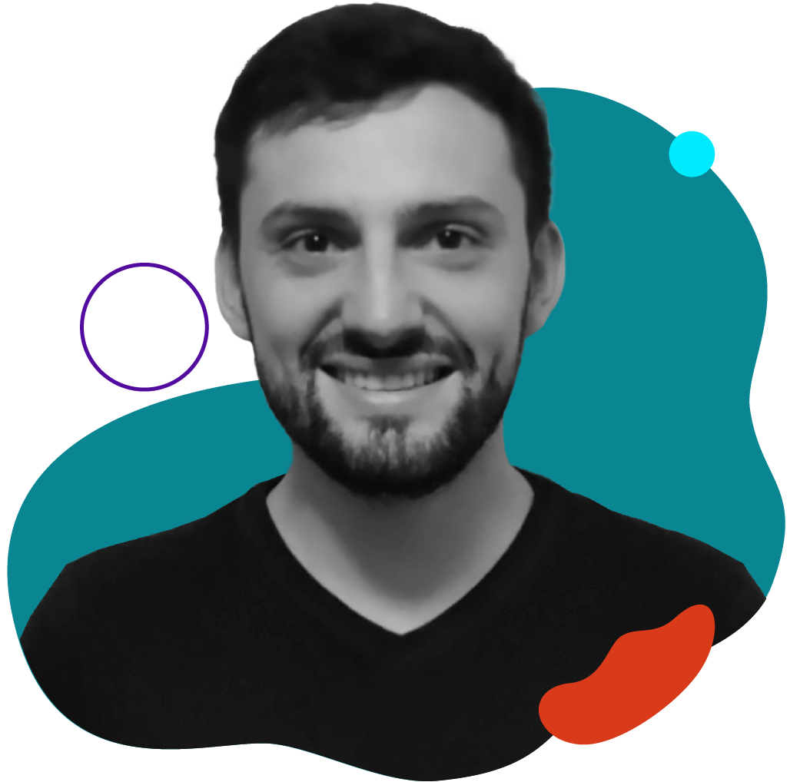
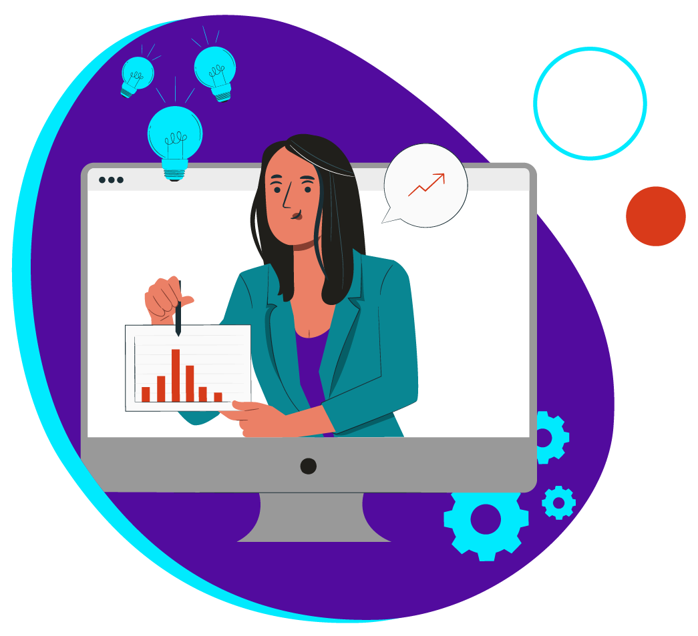
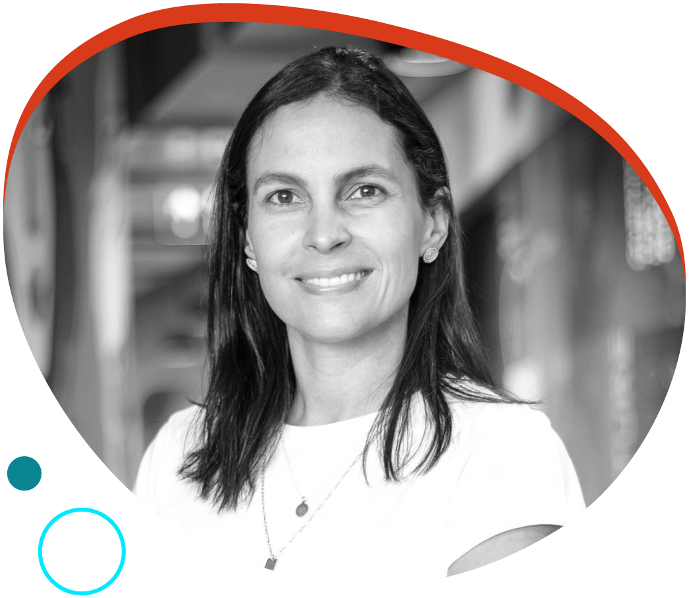
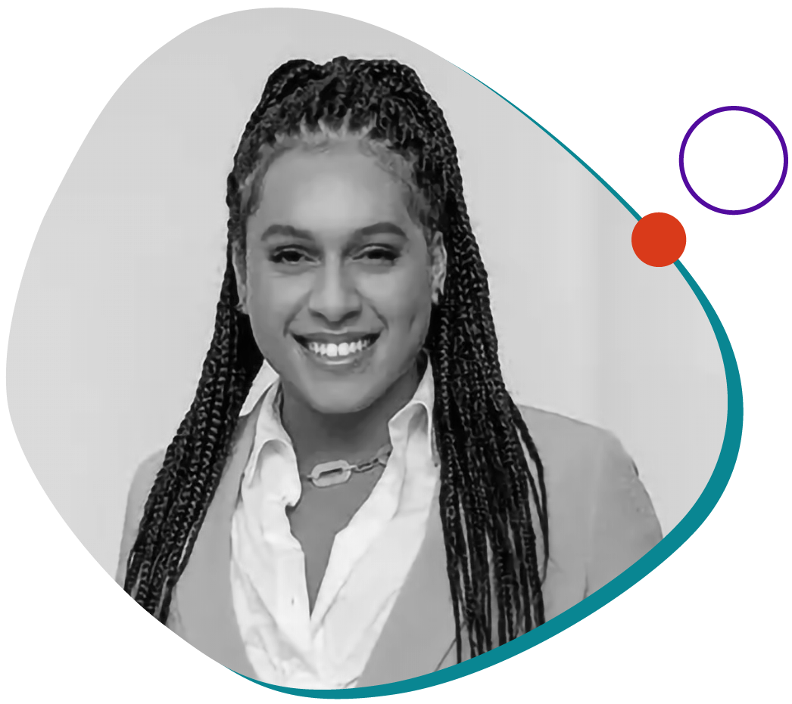
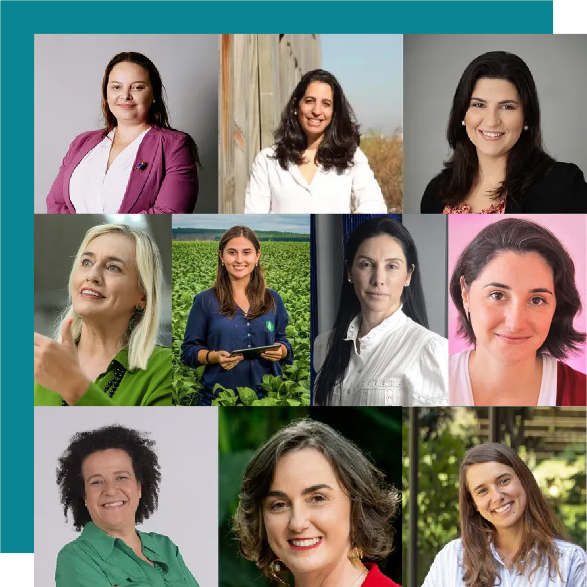
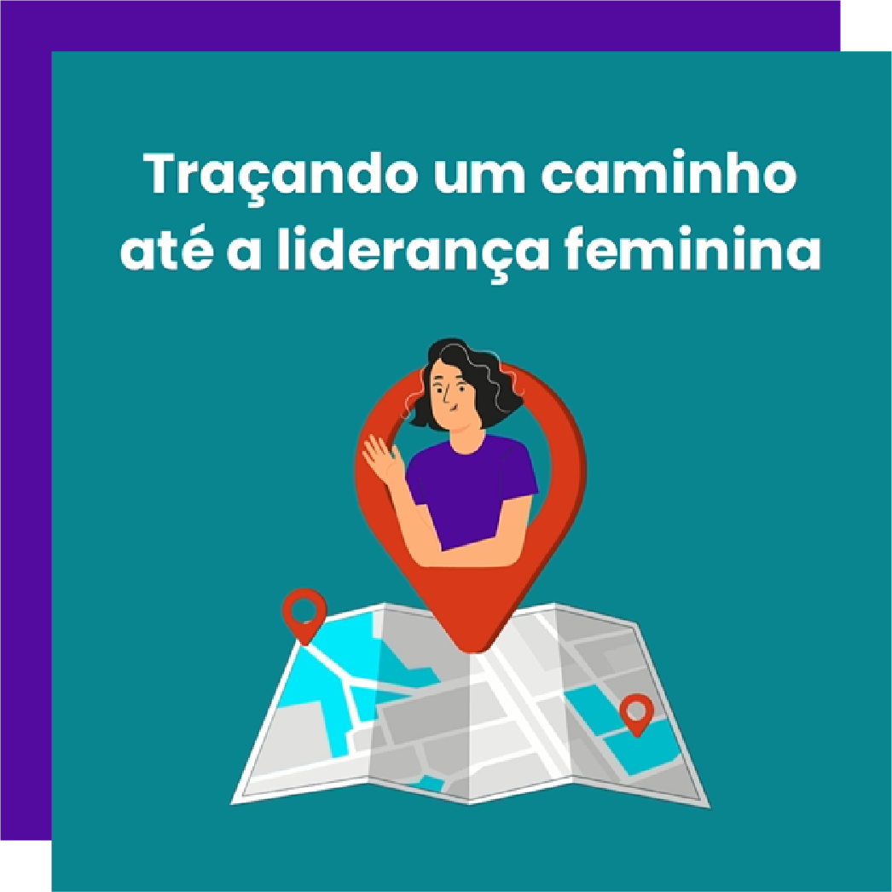

Não queremos ir para o spam! =) selecione este email como
“confiável” ou mova-o para a Caixa de Entrada.
Dois anos de WE Impact News
A WE Impact News está fazendo aniversário! São
dois anos
produzindo conteúdos e fazendo uma curadoria cuidadosa para
compartilhar inspiração, oportunidades de eventos, cases e
tendências sobre negócios, tecnologia, inovação, diversidade
e inclusão.
Como nada disso faria sentido sem nosso público, convidamos
algumas das pessoas mais engajadas para nos ajudar a
construir essa edição especial!
Para a fundadora e CEO da Workhub Digital, Andréa Migliori,
a WE Impact News se destaca principalmente pela divulgação
de eventos e oportunidades do ecossistema. Sobre sua
edição
preferida, ela compartilha a número #16: “nessa época, saiam
várias notícias sobre o inverno das startups e nessa edição
vocês compartilharam o artigo “A fonte do Venture Capital
secou para quem?”, que falava sobre os desafios que as
founders mulheres sempre enfrentaram durante a
captação”.
Já a advogada Adelaide Modesto nos acompanha de Portugal e
se interessa principalmente pelos conteúdos sobre
equidade e
lente de gênero. Ao falar sobre o que gostaria de
ver na
nossa newsletter, ela cita a possibilidade de uma
globalização “Quando pensamos, por exemplo, na cartilha
"Princípios de Empoderamento das Mulheres para
Startups", são princípios transversais que valem
independentemente de
estarmos em Angola, Moçambique ou Portugal, e podem ser
replicados nesses países de forma positiva”.
Conversamos ainda com o professor Marcos Primo, e nos
orgulhamos em saber que a WE Impact News é um material que o
ajuda com sua pesquisa sobre D&I, empreendedorismo
feminino
e empreendedorismo sênior. “É um canal para empresas
que
ainda estão engatinhando na temática de diversidade e
inclusão conhecer as práticas que já estão sendo discutidas
e implementadas”, afirma.
Quer relembrar as edições que fizeram mais
sucesso com o público nos últimos anos?
Está aproveitando a leitura?
Que tal compartilhar essa edição da WE Impact News com
outras empreendedoras e empreendedores da sua rede de
contatos? 😉
#WIN – WE Impact Network
[WEBINAR] Chat GPT e AI com a Microsoft

Já pensou em aprender sobre ChatGPT e IA com um
especialista
da Microsoft? A WE Impact e o WE Ventures se uniram para
tirar suas dúvidas sobre um dos assuntos mais em alta no
momento.
No dia 24 de abril, às 17h, vamos promover um webinar
com o
Cloud Solution Architech Data & AI da Microsoft, Afonso
Menegola, que aborda temas como impactos do Chat GPT em
negócios existentes, aplicações aprovadas pela Microsoft e
porque é importante ter interferência humana. Ele também
vai responder a perguntas sobre o tema.
Preencha o formulário e garanta sua participação nesse
encontro online e gratuito!
#DiversidadenaPrática
Como as corporações podem utilizar a inovação aberta para
aumentar os índices de diversidade e inclusão

Você acredita que é possível utilizar a inovação aberta para
aumentar os índices de diversidade e inclusão de uma
corporação? Spoiler: a reposta é SIM!
Isso pode acontecer por meio de cases de sucesso que
inspiram e adoção de práticas já validadas, além disso, é a
união de diferentes pontos de vista em uma estratégia
conjunta que mais contribui para a criação de soluções
inovadoras e inclusivas, fortalecendo esses valores no
ecossistema.
No novo artigo do blog WE Impact falamos mais sobre esses
processos e compartilhamos dicas valiosas para te ajudar
nessa jornada.
#DicadaCEO

Três coisas fundamentais para captar no cenário atual
são:
alta eficiência, queima de caixa sob controle e um produto/
plataforma muito bem-posicionado em seu mercado. [...] Toda
empresa que busca investimento no momento precisa comprovar
que tem uma operação muito eficiente, que não vai
queimar
dinheiro além do necessário e que tem o melhor
produto do
seu segmento.
- Silvia Motta, Managing Director Portfolio and
Investments na Movile, para o
blog WE Impact
#ElasImpactam

Impulsionando negócios LGBTQIAP+
A Contaí Comunidade, plataforma interativa para
empreendedoras e empreendedores LGBTQIAP+, foi
idealizada
por Raquel Virginia, fundadora e CEO da Nhaí!
A iniciativa é uma extensão do Contaí Summit, encontro
realizado anualmente, para ir além dos encontros pontuais. A
comunidade pretende entre inspirar e instrumentalizar
pessoas de toda a América Latina, promovendo
trocas
valiosas, networking, interação e impulsionar ainda mais
negócios – para acessar todo o continente, a
ferramenta
conta com tradutores simultâneos de conteúdo.
Saiba mais sobre o projeto:
#NaMídia

Mulheres inovadoras ESG
Nossa CEO, Lícia Souza, está na lista de Mulheres
Inovadoras
ESG da Época NEGÓCIOS!
A reportagem traz, dentre uma gama de 100 mulheres, o perfil
de 10 protagonistas que geram impacto positivo por meio dos
negócios. Além de promover acesso a capital para mulheres
empreendedoras de startups, entregando o pilar Social
por
meio da lente de gênero, também trabalhamos
fortemente para
difundir os demais pilares dessa agenda tão importante no
ecossistema de tecnologia.
É uma honra estar ao lado de grandes mulheres que têm
revolucionado o mercado brasileiro. Confira a
matéria
completa:
#NasRedes

Perdeu esse conteúdo?
Você pretende ou está iniciando sua jornada na liderança
feminina? Se sim, saiba que se preparar para esse
momento é
extremamente importante, pode te ajudar a reduzir os
desafios e chegar de forma mais rápida ao seu
objetivo
A nova CEO da Venuxx, startup #investidaWEImpact, sabe da
importância disso e compartilha dicas valiosas sobre esse
processo.